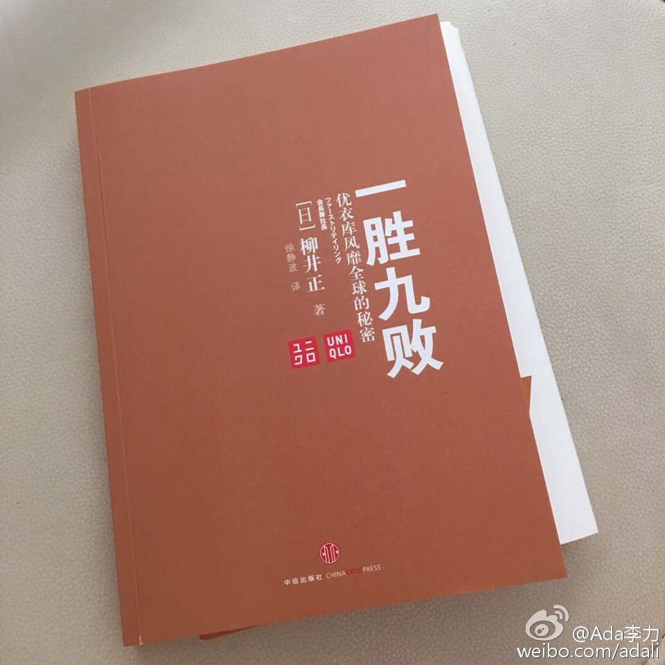

准备创业前，接到过几个邀请。记得对某个前同事的邀请，我说：“那里的盘子太小了”。其实说这样的话蛮得罪人，自己P都不是，还瞧不上别人？但没办法，之前经常干这类事情，眼高手低的缘故吧。@Ada李力:#读书# 优衣库创始人柳井正说：目标不可以定得太低。当你把目标定得很高看上去有些离谱时，你也不用担心。只要你制定严密可行的计划，并用纸把它写下来，经常把努力后的结果和目标进行🆚，再适当作些调整，即使目标再搞，大致上还是有可能实现得，关键是要坚持不屑，绝不能半途而废。对这段话颇有感触。因为小超市的经营者，跟世界500强的CEO，在企业经营上所花费的时间和精力，并不会少多少。同样的付出，为什么不去追求更大的目标。